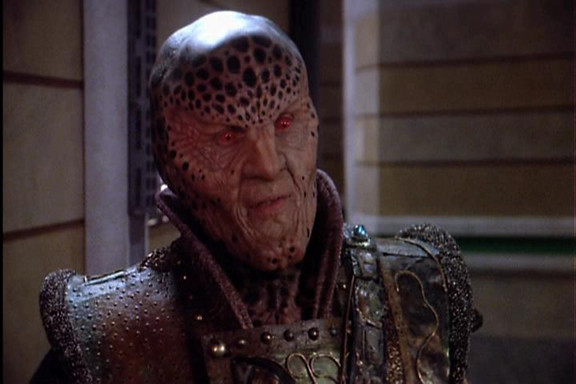

Let's (learn) Go

(And) What is Go... ?
{kind=link}
Andreas Katsulas R.I.P
- Statically compiled programming language
- Cross Platform
- Strong type language
- Garbage collection based
- Objected Oriented based on Struct Properties
- Support Concurrent computing development
- Influenced by many programming languages such as C ...
- ... and Pascal
Ah yes
But what is the ...
and what is Go
Basic Code
// We use packages to make order
package main
// We can import libraries
import (
// Using fmt for print commands
"fmt"
)
// Main function ...
func main() {
// External functions starts with capital letter
fmt.Println("Hello, World")
}
Output
$ go build hello.go
$ ./hello
Hello, World
$
Variables
...
// predefine variable
var (
var1 int
var2, var3 string
)
var1 = SomeFunction()
// variable on usage
var2 := SimeFunction()
// array -> predefined as 0
arr := [10]int{}
// array with values
arr2 := [2]string{"go", "lang"}
// compiler compute
fibonacci := [...]int{1, 1, 2, 3, 5, 8, 13, 21, 34, 55, 89, 144}
// slices are cool
scifi := []string{"babylon 5", "star trek", "doctor who"}
// maps (hash/associative array)
doctor_colors := map[string]string{"rose" : "blonde", "tardis" : "blue", "pond" : "ginger"}
// multiple value
answer, err := funcWithError()
// Ignore the error return
answer, _ = functionWithError()
...Functions
...
import (
"errors"
"fmt"
)
func helloWorld() {
fmt.Println("Hello World")
}
func LifeUniverseAndEverything() int {
return 42
}
func GuessAge(age int) (bool, error) {
if age < 0 { return false, errors.New("Age is lower then 0") }
if age == 100 { return true, nil }
return false, nil
}
...
func main() {
fmt.Println(GuessAge(42))
fmt.Println(GuessAge(100))
fmt.Println(GuessAge(-1))
}
false <nil>
true <nil>
false Age is lower then 0
Types
// alias
type Weight float64
// Method (The OOP style of Go)
func (w *Weight) String() string {
return fmt.Sprintf("%.2f kg", *w)
}
func main() {
var w Weight = 42.15
fmt.Println(w.String())
}
42.15 kg
Struct
type TV_Show struct {
name string // Show name
genre string // Show genre
channel int // Channel on TV
air int64 // timestamp when it will be aired
rerun bool // is it a re-run ?
season string // number of season
episode string // number of episode
}
Unofficial OOP
// type TV_Show struct ...
func (show TV_Show) Show() string {
return fmt.Sprintf("%s - S(%s) E(%s)", show.name, show.season, show.episode)
}
func main() {
var show TV_Show
show.name = "Star Trek - Creation of Data"
show.episode = "1b"
show.season = "Pilot"
fmt.Println(show.Show())
}
Star Trek - The next generation - S(Pilot) E(1b)
Basic Flows
{kind=link}
Parallel and Concurrency
- Setting code to execute in parallel, without touching threads or processes
- Create more then one execution at "the same time"
- Wait for tasks if needed
- Measure tasks execution time
go with channels
{kind=link}
Concurrency
package main
import (
"fmt"
"time"
)
func say(s string) {
for i := 0; i < 5; i++ {
time.Sleep(100 * time.Millisecond)
fmt.Println(s)
}
}
func main() {
go say("world")
say("hello")
}
hello
world
hello
world
hello
world
hello
world
hello
Channels
package main
import "fmt"
func sum(a []int, c chan int) {
sum := 0
for _, v := range a {
sum += v
}
c <- sum // send sum to c
}
func main() {
a := []int{7, 2, 8, -9, 4, 0}
c := make(chan int)
go sum(a[:len(a)/2], c)
go sum(a[len(a)/2:], c)
x, y := <-c, <-c // receive from c
fmt.Println(x, y, x+y)
}
17 -5 12
Buffered Channels
package main
import "fmt"
func main() {
c := make(chan int, 2)
c <- 1
c <- 2
fmt.Println(<-c)
fmt.Println(<-c)
}
1
2
func fibonacci(c, quit chan int) {
x, y := 0, 1
for {
select {
case c <- x:
x, y = y, x+y
case <-quit:
fmt.Println("quit")
return
}
}
}
func main() {
c := make(chan int)
quit := make(chan int)
go func() {
for i := 0; i < 10; i++ {
fmt.Println(<-c)
}
quit <- 0
}()
fibonacci(c, quit)
}
0
1
1
2
3
5
8
13
21
34
quit
{kind=link}